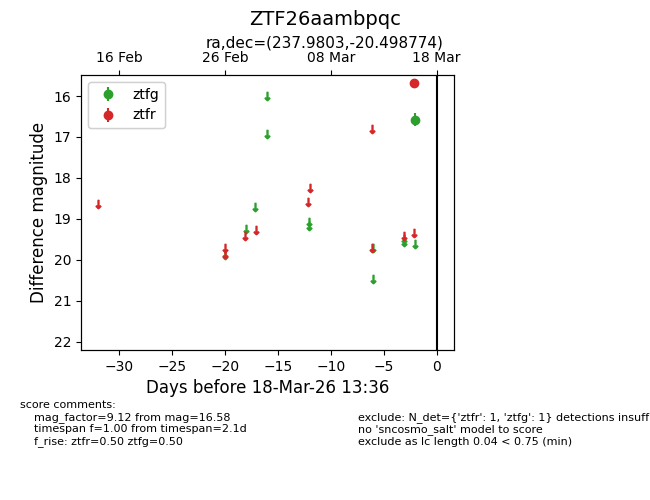
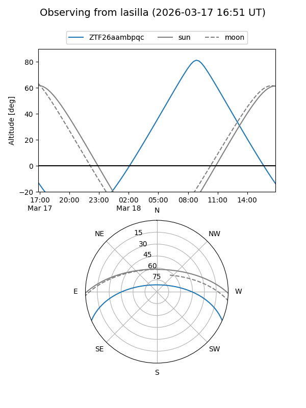
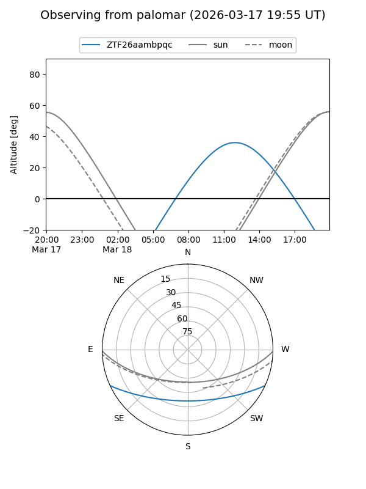
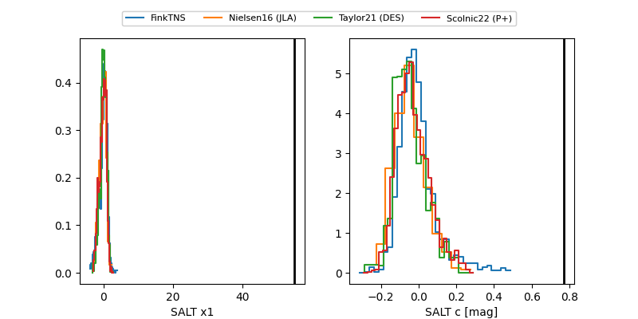

ZTF26aambpqc
Target ZTF26aambpqc at 2026-03-18 13:38
Aliases and brokers:
FINK: link
Lasair: link
ALeRCE: link
alt names
ZTF26aambpqc (ztf,fink_ztf)
Coordinates:
equatorial (ra, dec) = 237.9803,-20.49877
equatorial (HMS+DMS) = 15:51:55.28,-20:29:55.58
galactic (l, b) = (350.2055,+25.37518)
Flags:
Photometry:
last ztfg=16.58, ztfr=15.69
1 ztfg, 1 ztfr detections
Lightcurve

Visibility


Additional plots
